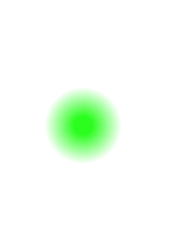

Hola!! soy...
Luis Huatay
Bienvenid@ a mi repositorio o biblioteca geográfica personal, aquí se publican algunos de los trabajos que realicé y realizaré a lo largo de mi carrera como profesional desarrollador en geomática o generalmente en sistemas de información geográfica, espero te diviertas.
Explorar- Si estás aquí entonces...
Podrás encontrar información que te puede servir para any proyectos que puedas tener, inspiración, información temática, etc.
- Necesita contar conmigo?
Para contactarme puedes clicar aquí . Estaré pendiente y te responderé en la brevedad posible.
- Te gusta lo que ves?
Te invito a darle una estrella a este sitio en github haciendo click aquí
Skills

HTML5

CSS3
Markdown

Git

Python

Java
Jupyter Notebook
Linux

PL/PgSQL
PostGIS
Quantum GIS
Blender (GIS)
ERDAS Imagine
Geoserver
Inkscape